Manual del cajero (app kaja en la terminal)
kaja es la app de la terminal de cobro. Con ella el cajero abre y cierra la caja, vende (en efectivo o con tarjeta), cobra mesas, anula, devuelve, vende o controla entradas de eventos y despacha y recibe encomiendas.
- Configurar la terminal (una sola vez, la hace el administrador o el técnico)
- Tu usuario: ingresar, primer ingreso, pedir un usuario, si no podés ingresar y recuperar la contraseña
- El menú
- Abrir la caja
- Vender
- Mesas (restaurantes)
- Cerrar la caja
- Anular una venta
- Devolución
- Eventos
- Encomiendas: despachar y escanear remitos
- Configuración
- Vender desde la computadora o el celular (kaja-web)
Configurar la terminal
Una terminal nueva hay que conectarla con kaja-bo escaneando el QR que el superadmin entregó al crear el comercio. La dirección de kaja-bo y la clave del comercio no se escriben a mano: solo se cargan con el QR.
El número de terminal tampoco: kaja lo toma solo de la app de pagos de Fiserv al abrirse.
- En la pantalla de ingreso tocá el engranaje (arriba a la derecha) para abrir la Configuración.
- Elegí cómo se cobra con tarjeta: App2App (la app de pagos de la misma terminal) o Fpinpad (un pinpad externo, con su IP). Si no sabés cuál, consultá con el técnico.
- Tocá Escanear QR de kaja-bo y apuntá la cámara al QR. Al leerlo, la pantalla dice "kaja-bo configurado". Si dice "QR no reconocido", ese no es el QR de configuración de kaja-bo.
- Tocá Guardar.
- Tocá Reportar terminal a kaja-bo: la terminal aparece en kaja-bo y baja el catálogo, el tema y los datos del comercio. Después el administrador la asigna a su sucursal.
Si se escanea el QR de otro comercio, la terminal borra el catálogo del comercio anterior y baja el del nuevo.
Tu usuario
Cada cajero entra a la terminal con su propio usuario. Hay dos formas de tenerlo:
- Te lo crea el administrador en kaja-bo y te pasa el usuario y la contraseña. La primera vez que entrás, verificás tu correo (Primer ingreso).
- Lo pedís vos desde la terminal y el administrador lo aprueba (Pedir un usuario).
El correo verificado sirve para recuperar la contraseña si te la olvidás.
Ingresar
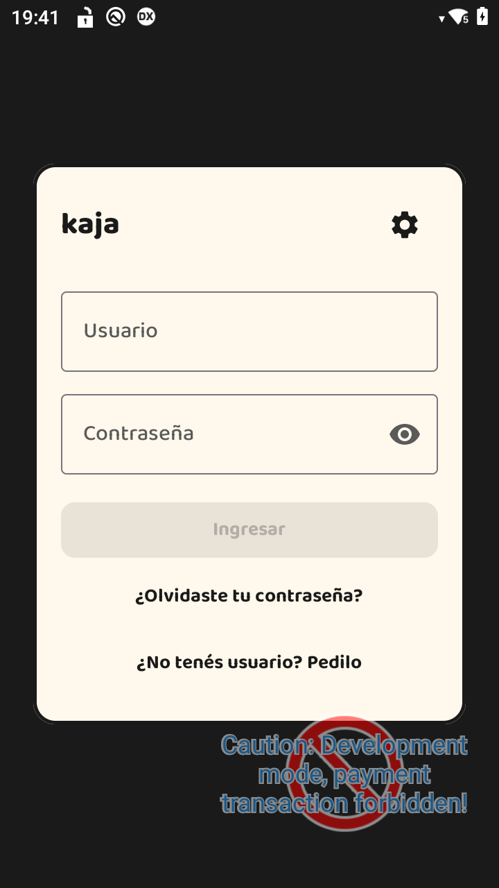
Escribí tu Usuario y tu Contraseña y tocá Ingresar. El ojo a la derecha muestra u oculta la contraseña.
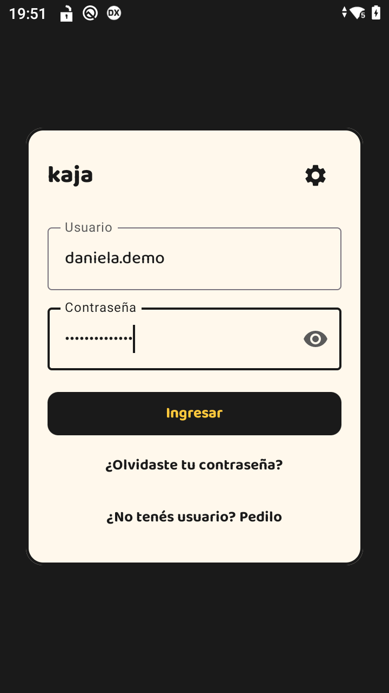
Si todo está bien, entrás a la pantalla de Venta:
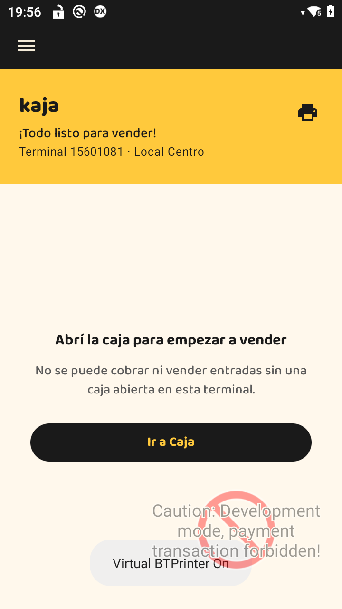
La sesión dura 8 horas. Diez minutos antes de que termine aparece el aviso "Tu sesión se cierra en 10 minutos": tocá Continuar para seguir 2 horas más.
Primer ingreso: verificar el correo
Si tu usuario lo creó el administrador, la primera vez que tocás Ingresar la terminal te pide verificar tu correo. Te muestra a qué correo va a mandar el código (con parte oculta); si no es el tuyo, escribí el correcto en Otro correo (opcional). Tocá Enviar código.
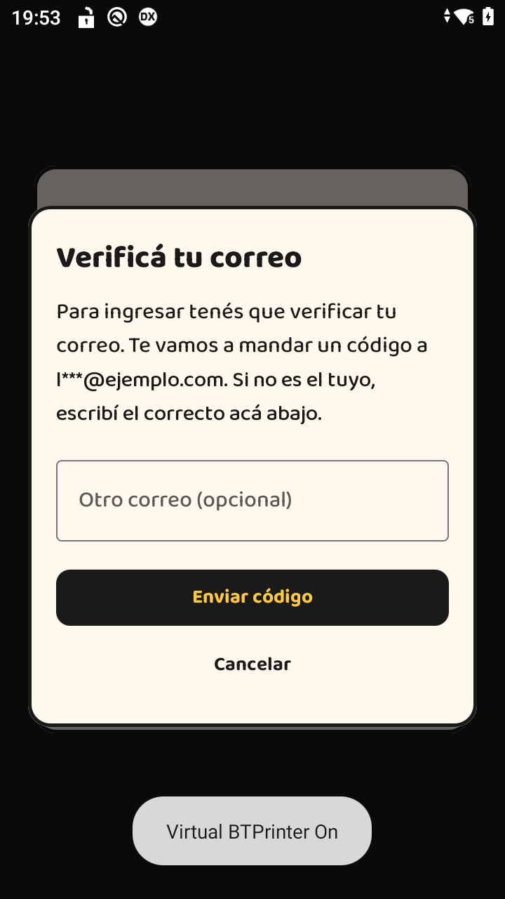
Te llega un mail con un código de 8 dígitos. Escribilo y tocá Verificar. Si no llegó, revisá el correo no deseado o tocá Reenviar código.
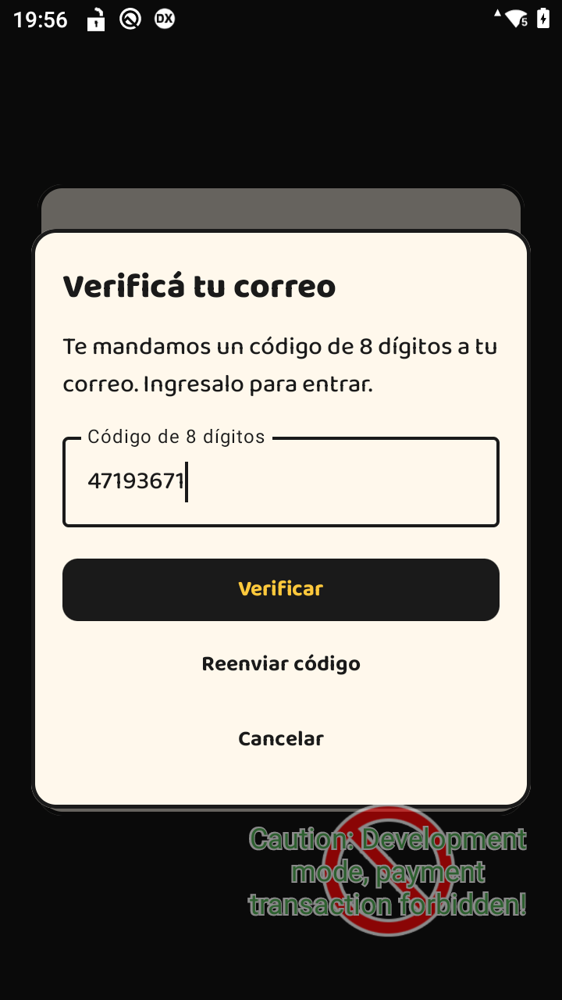
Con el correo verificado entrás directo a Venta, y no se vuelve a pedir.
Pedir un usuario
Si todavía no tenés usuario, pedilo desde la pantalla de ingreso:
Tocá ¿No tenés usuario? Pedilo.
Completá Usuario (con el que vas a entrar), Tu nombre, Correo y Contraseña, y tocá Enviar solicitud.
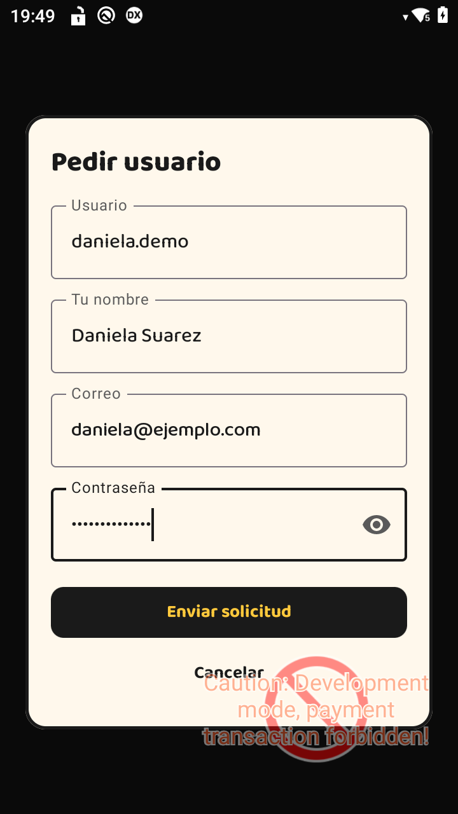
Te llega un mail con un código de 8 dígitos. Escribilo y tocá Verificar.
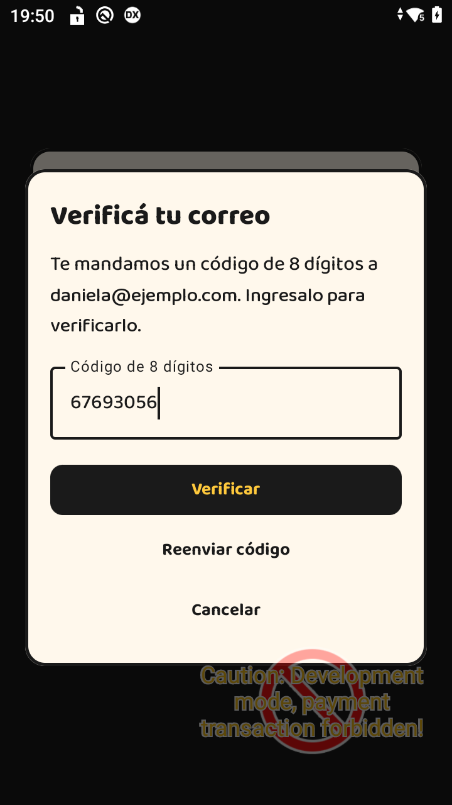
Listo: tu correo quedó verificado y tu usuario queda pendiente hasta que el administrador lo apruebe. Con Avisar por WhatsApp o Avisar por mail le mandás un mensaje al contacto que cargó el comercio.
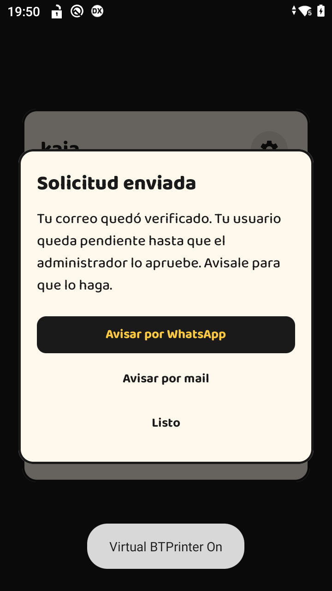
Cuando el administrador lo apruebe en kaja-bo (así lo ve él), ya podés ingresar con tu usuario y contraseña.
Si no podés ingresar
| Mensaje | Qué pasa | Qué hacer |
|---|---|---|
| Tu cuenta está pendiente de aprobación | Pediste usuario y el administrador todavía no lo aprobó. | Avisale al administrador para que lo apruebe en kaja-bo. |
| Usuario o contraseña incorrectos | El usuario o la contraseña están mal, o tu usuario fue dado de baja. | Revisá lo que escribiste. Si está bien, usá "¿Olvidaste tu contraseña?" o consultá con el administrador. |
| Verificá tu correo | Es tu primer ingreso y tu correo todavía no está verificado. | Seguí los pasos de Primer ingreso. |
| Demasiados intentos: esperá unos minutos | Se escribió mal la contraseña 10 veces seguidas. El usuario queda bloqueado 5 minutos, para que nadie pueda adivinarla probando. | Esperá 5 minutos y volvé a intentar. Si no te acordás de la contraseña, usá "¿Olvidaste tu contraseña?". |
| No se pudo conectar con kaja-bo | La terminal no tiene conexión con kaja-bo. | Revisá la red de la terminal y volvé a intentar. |
¿Olvidaste tu contraseña?
En la pantalla de ingreso tocá ¿Olvidaste tu contraseña?.
Escribí el correo con el que verificaste tu usuario y tocá Enviar link.
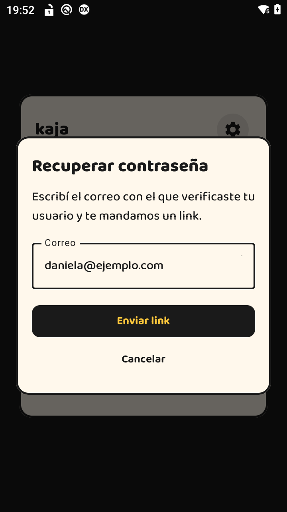
Te llega un mail con un link para elegir una contraseña nueva. Vence en 30 minutos y se puede usar una sola vez.
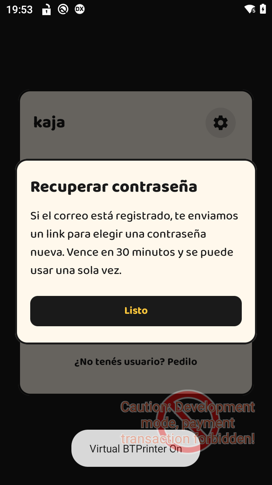
Por seguridad, la terminal no dice si el correo está registrado o no. Si no te llega nada, puede que tu correo no esté verificado: pedile al administrador que te resetee la contraseña desde kaja-bo.
El menú
Tocá las tres rayas (arriba a la izquierda) para abrir el menú:
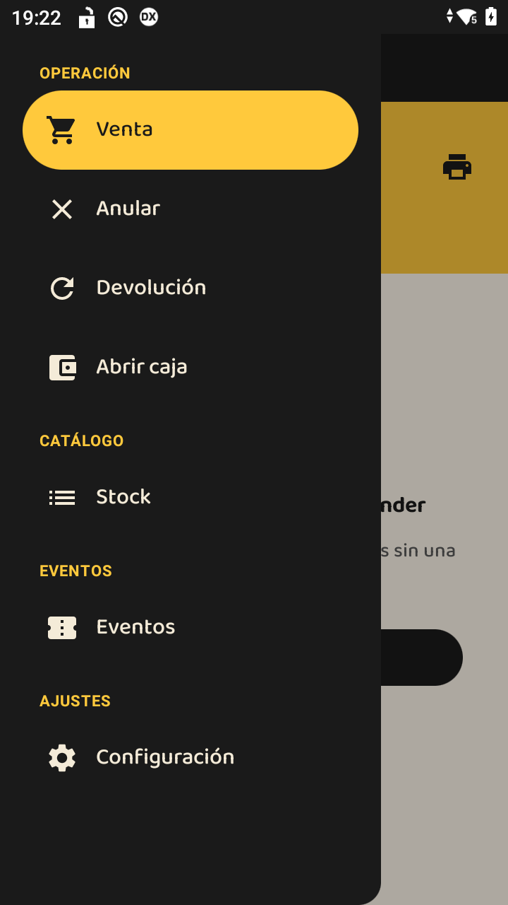
- Operación: Venta, Mesas, Anular, Devolución y Abrir/Cerrar caja. Mesas aparece solo si el comercio usa el módulo de mesas.
- Eventos: venta y control de entradas.
- Encomiendas: Despachar y Escanear remito. Aparece solo si el comercio usa el módulo de encomiendas.
- Pasajes: venta de boletos y control al subir. Aparece solo si el comercio usa el módulo de pasajes.
- Ajustes: Mensajes, Configuración y Salir, que cierra la app (tu sesión y la caja quedan como estaban; para cerrar la sesión usá Cerrar sesión en Configuración).
Si no entran todas las opciones, deslizá el menú hacia arriba para ver el resto.
Salir de la app
Para que nadie salga de kaja por error en medio de una venta, mientras la app está abierta:
- La tecla atrás te lleva a Venta, pero no cierra la app.
- La tecla inicio no hace nada.
- La barra de arriba (hora, batería) no se puede deslizar hacia abajo.
Para salir de kaja usá Salir en el menú: cierra la app y la terminal vuelve a funcionar normal. Si la app se cerró de golpe y la terminal quedó trabada, abrí kaja de nuevo y tocá Salir.
Abrir la caja
Sin una caja abierta no se puede cobrar ni vender entradas. La pantalla de Venta lo avisa con "Abrí la caja para empezar a vender":
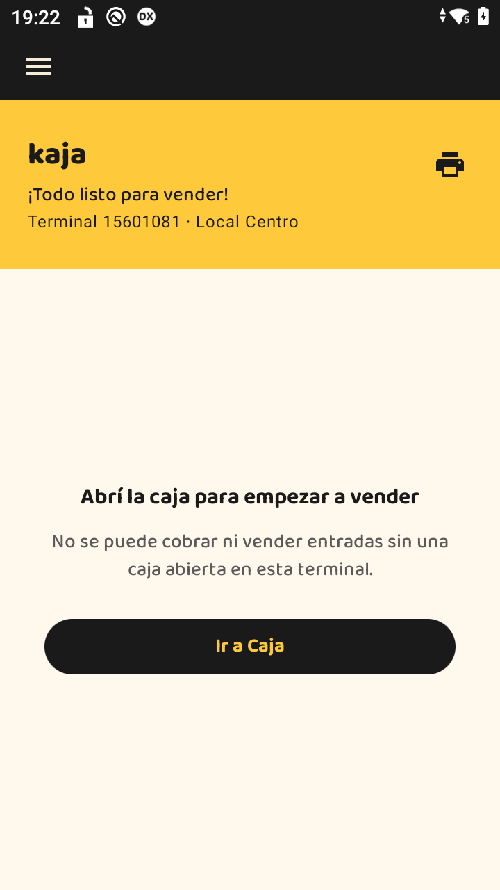
- Tocá Ir a Caja (o, en el menú, Abrir caja).
- Escribí el Monto inicial: el efectivo con el que arranca la caja.
- Tocá Abrir caja.
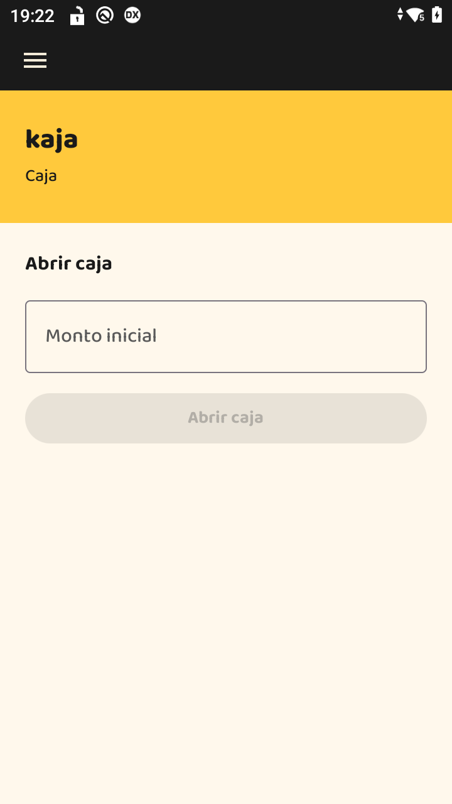
Vender
En la pantalla de Venta (con la caja abierta):
- Agregá productos:
- con el botón + (Agregar producto) los buscás por nombre o código;
- con el botón Escanear producto leés el código de barras.
- En cada producto usá + / − para cambiar la cantidad o la X para quitarlo. Si un producto tiene una promoción vigente (por ejemplo 3x2), aparece la etiqueta Promo y el descuento ya está en el TOTAL.
- Tocá Cobrar y elegí ¿Cómo paga?:
- Efectivo: escribí el Monto abonado; la terminal muestra el Vuelto. Tocá Confirmar (se habilita cuando el monto alcanza).
- Tarjeta: la venta pasa a la app de pagos (o al pinpad). Seguí las instrucciones de la pantalla de pago y pasá la tarjeta.
- Mientras se procesa, la pantalla muestra en qué paso está ("Registrando venta en el servidor…", "Enviando venta al aplicativo de pago…", "Emitiendo comprobante fiscal…").
- Si la venta se aprueba, se imprime el ticket con el comprobante fiscal (CFE). Con Enviar CFE por correo se lo mandás al cliente por mail. Tocá Listo para empezar otra venta.
Si algo sale mal:
- Rechazado: la tarjeta fue rechazada. Podés Reintentar o cobrar de otra forma.
- "No reintentes el cobro: el resultado se va a resolver solo.": el procesador todavía no contestó. No vuelvas a cobrar: la venta se resuelve sola en unos minutos y queda registrada.
- Comprobante fiscal pendiente: la venta se cobró pero el CFE no se pudo emitir en ese momento. Se reintenta solo; también podés tocar Reintentar CFE.
El ícono de la impresora (arriba a la derecha en Venta) imprime un ticket de prueba.
Mesas
Para restaurantes: varios mozos le cargan productos a la misma mesa, cada uno desde su terminal, y la cuenta se paga en las partes que pidan los clientes. Necesita conexión con kaja-bo, y para cobrar, la caja abierta.
En el menú tocá Mesas. Aparecen las mesas de tu local: las libres en blanco y las ocupadas en color, con el total consumido (y lo que falta pagar, si ya pagaron una parte). La pantalla se actualiza sola, así ves lo que cargan los otros mozos.
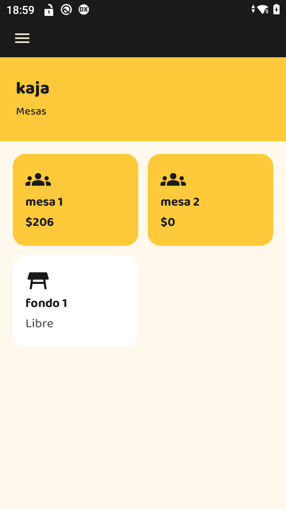
Cargar productos
Tocá una mesa. Si estaba libre, se abre su cuenta.
Tocá Agregar producto, buscá el producto y tocalo: cada toque agrega una unidad. Tocá Listo al terminar.
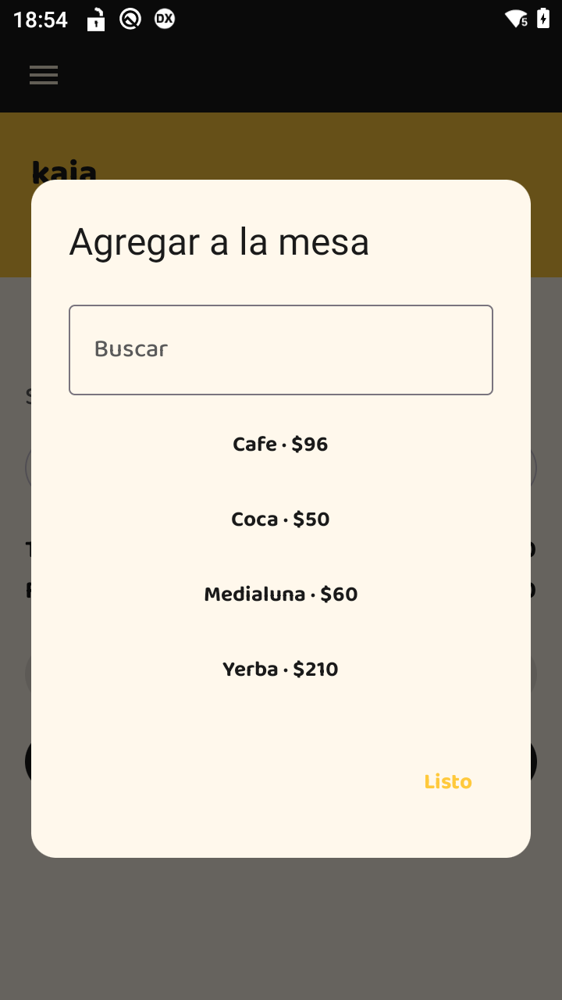
Cada renglón muestra quién lo cargó. Con la papelera quitás un producto (no se puede si ya se cobró esa parte de la cuenta).
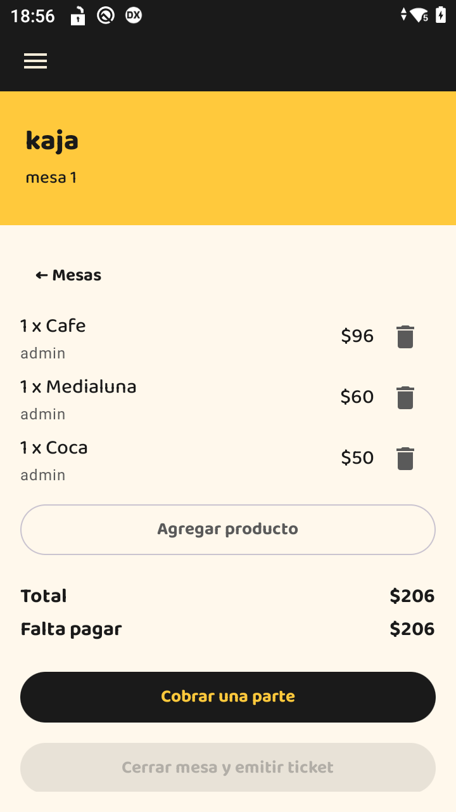
← Mesas vuelve a la grilla sin cerrar nada: la cuenta queda abierta.
Cobrar una parte
Cada cliente paga lo que quiere: "yo pongo 100", "yo el resto".
- Tocá Cobrar una parte.
- En Monto aparece lo que falta; cambialo por lo que paga este cliente.
- Elegí la Propina: Sin, 10%, 15% u Otra (la escribís a mano).
- Elegí Efectivo o Tarjeta. Abajo ves el Total a cobrar (monto + propina).
- Tocá Cobrar. Con tarjeta, pasala por el pinpad cuando lo pida.
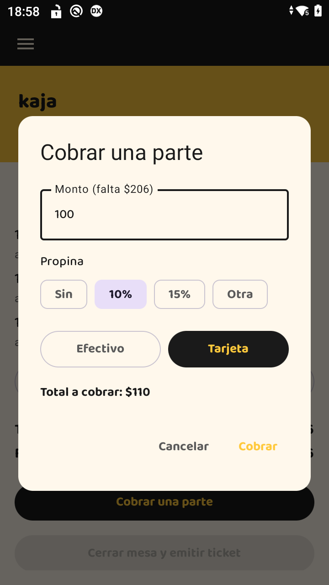
La pantalla confirma "Cobrado $… + propina $…" y la cuenta muestra Pagado y Falta pagar. Si dos mozos cobran la misma mesa a la vez, kaja-bo no deja que se cobre más de lo que falta.
Si algo sale mal:
- Cobro rechazado: no se cobró nada; podés volver a intentar.
- "ITD no confirmó el cobro. Revisá el pinpad antes de volver a cobrar.": fijate en el pinpad si el pago salió antes de cobrar de nuevo.
- "Cobrado, pero no se pudo avisar a kaja-bo: no lo vuelvas a cobrar": el cliente ya pagó; no repitas el cobro.
Cerrar la mesa
Cuando ya no falta pagar nada, tocá Cerrar mesa y emitir ticket: sale un solo ticket con todos los productos y el comprobante fiscal, se descuenta el stock y la mesa vuelve a quedar libre. Si abriste una mesa por error y no tiene productos, el botón dice Liberar mesa.
Cerrar la caja
- En el menú tocá Cerrar caja.
- Contá el efectivo y escribilo en Monto contado.
- Tocá Cerrar caja.
Al cerrar la caja también se hace el cierre de lote de las tarjetas. kaja-bo compara lo contado con lo esperado y el administrador ve la diferencia.
Anular una venta
Se anulan ventas con tarjeta del lote actual (las de la caja abierta). Para ventas de días anteriores usá Devolución.
- En el menú tocá Anular.
- Escribí el Número de ticket (4 dígitos, está en el ticket impreso) y tocá Anular.
- Pasá la misma tarjeta por la terminal cuando lo pida.
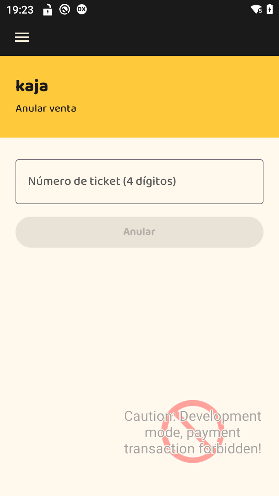
Igual que en la venta: si dice "No reintentes", esperá; el resultado se resuelve solo.
Devolución
Se devuelven ventas con tarjeta de un lote ya cerrado (días anteriores), en forma total o parcial. Se emite una nota de crédito y, si se devuelve todo, se repone el stock.
- En el menú tocá Devolución.
- Escribí el Número de ticket y tocá Buscar. Si ese número se repite entre días, elegí la venta correcta de la lista.
- Escribí el monto a devolver (todo o una parte) y tocá Devolver.
- Pasá la misma tarjeta cuando lo pida.
- Al terminar podés Imprimir el comprobante.
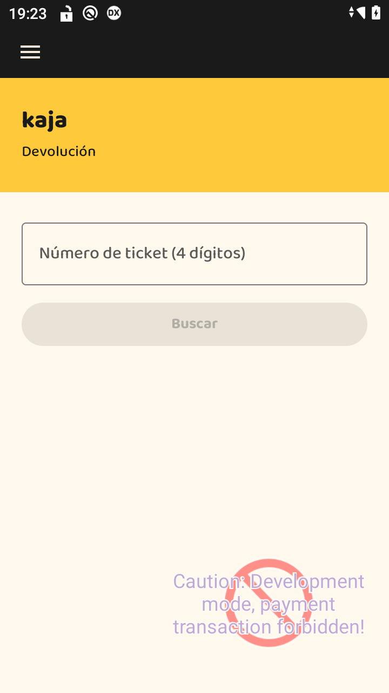
Eventos
En el menú tocá Eventos.
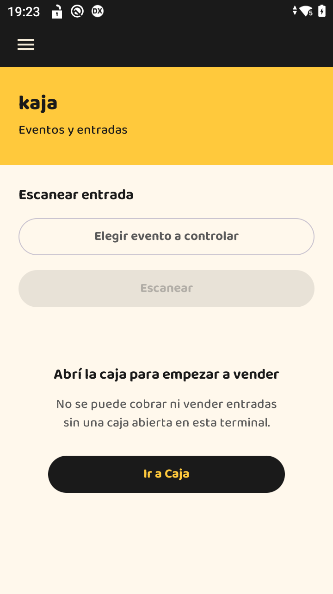
- Escanear entrada (control en la puerta): tocá Elegir evento a controlar, elegí el evento y tocá Escanear para leer el QR de cada entrada. La pantalla dice Entrada válida o Entrada no válida, con el motivo (por ejemplo, que ya se usó).
- Vender entradas: elegí el evento, la Cantidad, el Mail del comprador (le llegan las entradas con su QR) y, si querés, el nombre. Elegí Efectivo o Tarjeta y tocá Vender. Necesita la caja abierta.
Encomiendas
Para agencias de envíos: cada local del comercio es una agencia. La encomienda se despacha en un local, viaja y se entrega en otro. Con el módulo apagado, el grupo Encomiendas no aparece en el menú.
El envío lo paga el que envía (se cobra al despachar) o el que recibe (se cobra antes de entregar). Se cobra como una venta más, en efectivo o con tarjeta, con ticket y comprobante; por eso hace falta la caja abierta.
Despachar
En el menú tocá Encomiendas → Despachar.
- Elegí la Agencia de destino.
- Completá Remitente y Destinatario (obligatorios), sus teléfonos y, si va a domicilio, la Dirección de entrega. Contenido es opcional.
- Cargá la cantidad de Bultos y el Precio del envío.
- En ¿Quién paga el envío? elegí El que envía o El que recibe. Si paga el que envía, elegí Efectivo o Tarjeta.
- Tocá Cobrar $… y despachar (o Despachar, si paga el que recibe).
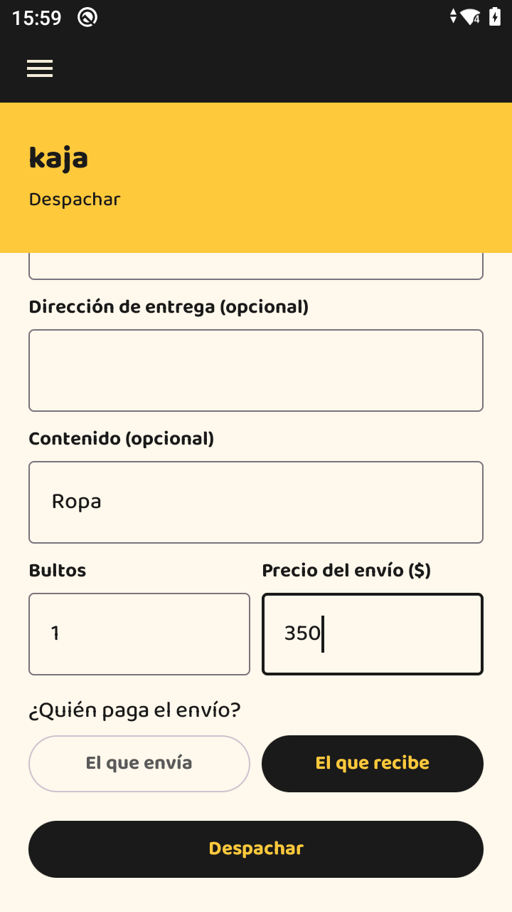
Sale impreso el remito con su código y un QR: va pegado al paquete. Si la impresora falló, tocá Reimprimir remito. Nuevo despacho deja el formulario en blanco.
Escanear remito
En el menú tocá Encomiendas → Escanear remito y tocá Escanear remito para leer el QR (o escribí el Código del remito y tocá Buscar). Aparece la encomienda con origen, destino, remitente, destinatario y cada movimiento con su fecha.
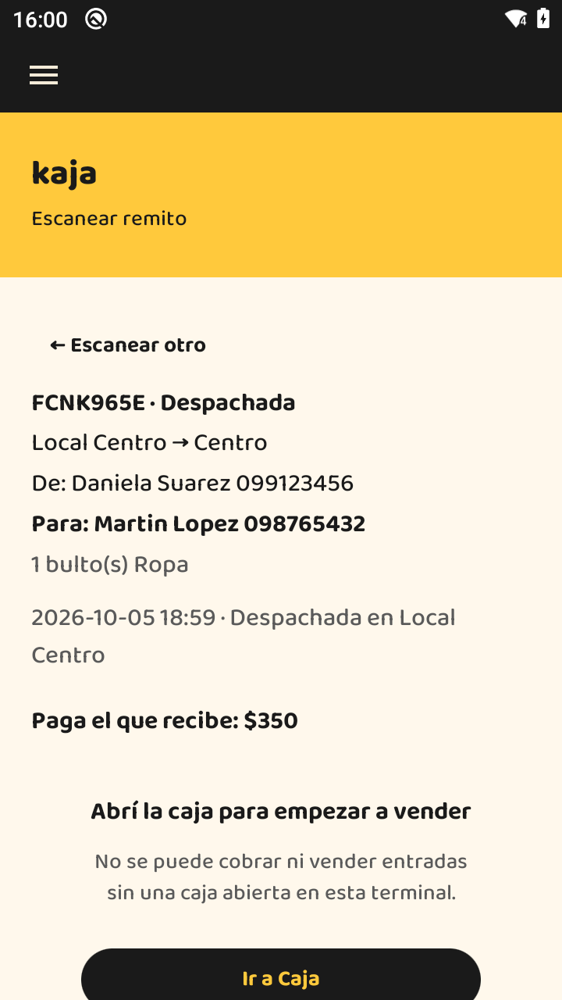
- Pasar a: tocá el estado nuevo. El orden es Despachada → En camino → Recepcionada → En reparto → Entregada; se puede saltar hacia adelante. Recepcionada queda registrada en el local de la terminal; desde ahí puede volver a En camino (por ejemplo, para mandarla a otra agencia).
- Paga el que recibe: si el envío no está pagado, elegí Efectivo o Tarjeta y tocá Cobrar $…. No se puede entregar sin cobrar.
- Entregada: escribí en Recibido por el nombre y documento de quien la retira, pedile que firme con el dedo en el recuadro blanco (Borrar para empezar de nuevo) y tocá Entregada. Sin firma no se puede entregar. Sale impreso un comprobante de entrega con la firma, y la firma queda en el historial del remito.
- Reimprimir remito vuelve a imprimirlo. ← Escanear otro vuelve al escáner.
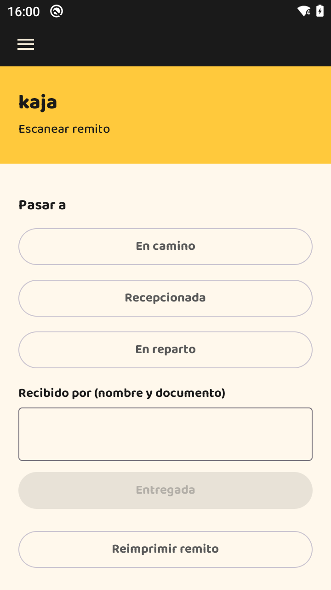
Si aparece "Cobrado, pero no se pudo avisar a kaja-bo", el cobro ya salió: tocá Reintentar aviso a kaja-bo y no vuelvas a cobrar.
Pasajes
En el menú tocá Pasajes. Con el módulo apagado, no aparece en el menú.
Vender un pasaje
Vender necesita la caja abierta: cada boleto se cobra como una venta más, con ticket y comprobante.
- Aparecen las salidas de Hoy, de todos los orígenes: primero las que salen de tu local. Con <** y **> cambiás de día. Cada salida muestra la hora, el origen, el destino, los asientos libres y el precio.
- Tocá la salida. Se abre el plano de cada coche: en los Comunes, filas de 2 + pasillo + 2; en los de Dos pisos, la Planta baja y la Planta alta. Los asientos ocupados tienen una ×.
- Tocá los asientos que vas a vender (se pintan de amarillo; tocalos otra vez para soltarlos) y completá Nombre y Documento de cada pasajero.
- Tocá Efectivo o Tarjeta.
Al aprobarse sale el ticket de la venta y un boleto por asiento, con el viaje, la fecha, la hora, el coche, el asiento, el pasajero y un QR. Después podés Reimprimir boletos o, en ¿Enviar los boletos por correo?, escribir el correo del pasajero y tocar Enviar por correo. Nueva venta vuelve a la lista de salidas.
Mientras cobrás, los asientos quedan apartados para vos durante 10 minutos: otro vendedor no los puede vender. Si otro vendedor ganó un asiento antes de que cobraras, la terminal avisa, actualiza el plano y no cobra nada: elegí otro asiento.
Si aparece "Cobrado, pero no se pudo registrar en kaja-bo", el cobro ya salió: tocá Reintentar aviso a kaja-bo y no vuelvas a cobrar.
Controlar boletos al subir
Tocá Controlar boleto (escanear) y leé el QR del boleto. No hace falta la caja abierta.
- Boleto válido: muestra el coche, el asiento, el pasajero y su documento. El boleto queda marcado como usado.
- Boleto no válido: muestra el motivo, por ejemplo que ya se usó, que está anulado o que es de otro día.
Configuración
En el menú tocá Configuración.
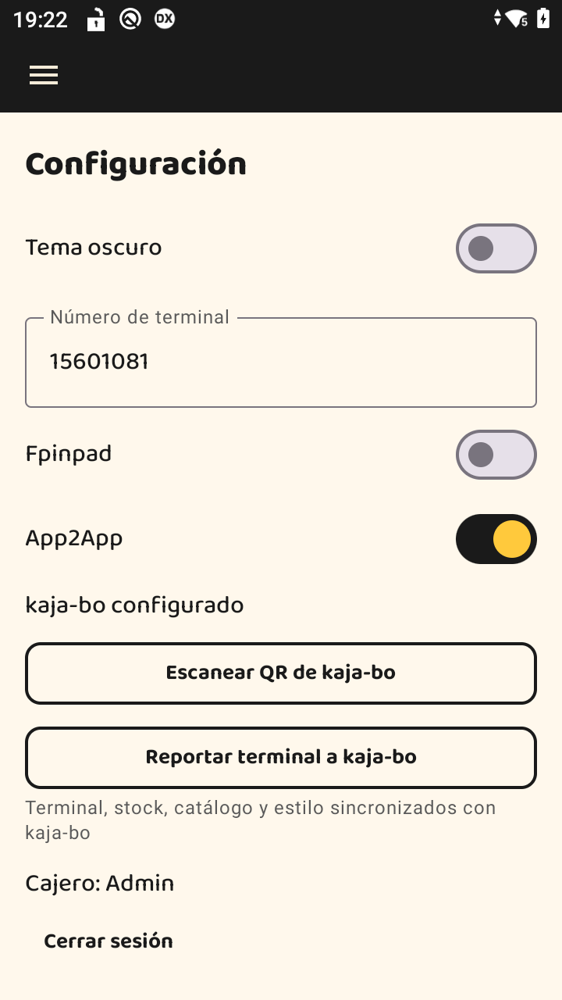
- Tema oscuro: cambia los colores de la app.
- Fpinpad y App2App: ver Configurar la terminal.
- kaja-bo configurado / sin configurar: indica si la terminal ya tiene cargado el QR del comercio.
- Escanear QR de kaja-bo: para conectar la terminal con su comercio (o cambiarla de comercio).
- Reportar terminal a kaja-bo: fuerza la sincronización (catálogo, stock, tema, promociones). Sin tocarlo, la terminal sincroniza sola cada 15 minutos.
- Cajero y Cerrar sesión: muestra quién está ingresado y permite salir.
- Guardar: guarda los cambios. Si salís con cambios sin guardar, la app te pregunta qué hacer.
Vender desde la computadora o el celular (kaja-web)
Además de la terminal, podés vender desde kaja-bo, la página web del comercio, en una computadora o en el navegador del celular. Entrá con tu correo y la misma contraseña de la terminal: vas a ver solo kaja-web, con Cobrar, Anular, Devolver, Entradas, Mesas, Encomiendas (en la web solo se cambia el estado; despachar y cobrar envíos se hace en la terminal) y Pasajes.
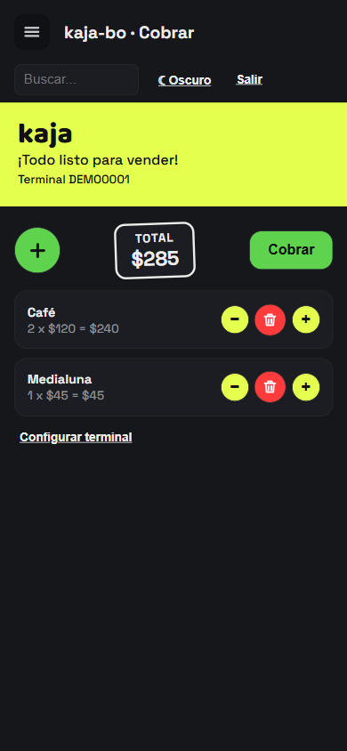
- Funcionan igual que en la terminal; en el celular, Cobrar se ve como la pantalla de venta.
- Los cobros con tarjeta salen en la terminal elegida en Cobrar → Configurar terminal, que tiene que tener la caja abierta.
- En la computadora podés usar un lector de códigos de barras de mano; en Android, el botón de escanear con la cámara.
- kaja-web no imprime ticket, y el efectivo que cobres ahí no entra en el arqueo de la terminal.
El detalle de cada pantalla está en el manual del administrador.